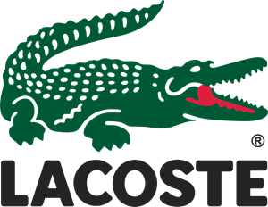
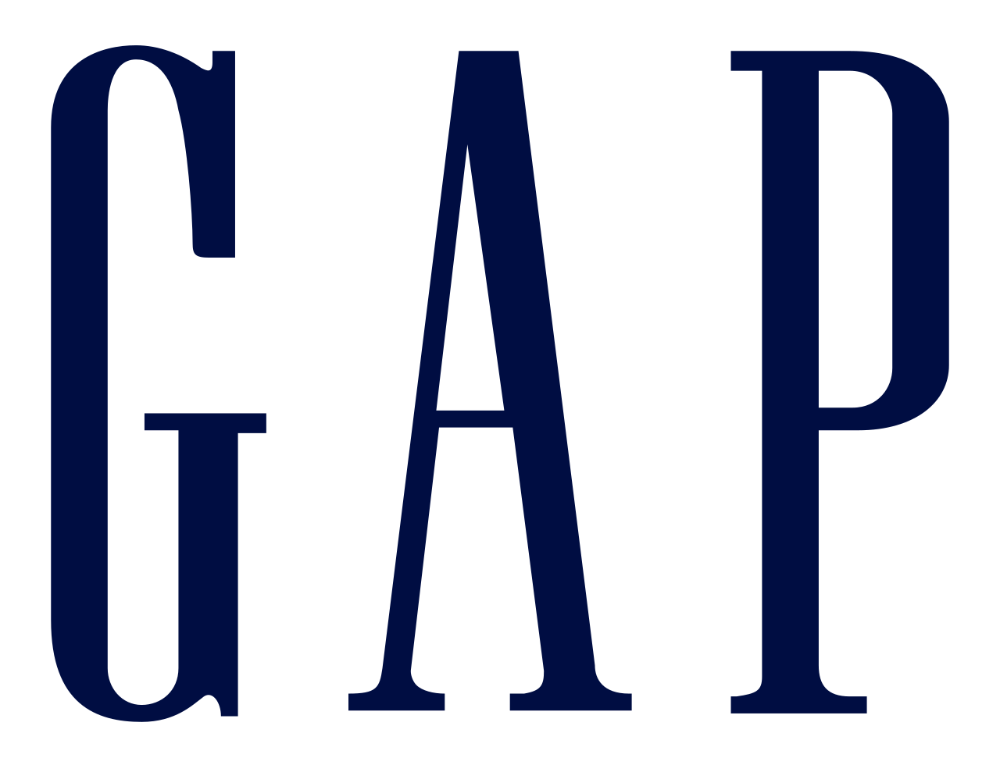

홈 > 브랜드 매거진 > 랄프 로렌
랄프 로렌
랄프 로렌(Ralph Lauren)은 1967년 미국에서 설립된 럭셔리 라이프스타일·패션 브랜드이다.
산업 분야 패션·럭셔리 · 공개 등급 편집 검수 · 브랜드 평가 4.7 ★


한눈에 보는 브랜드
랄프 로렌(Ralph Lauren)은 1967년 미국 뉴욕에서 창업자 랄프 로렌이 폭이 넓은 유럽풍 넥타이를 'Polo' 라벨로 선보이며 출발한 패션 하우스다. 이듬해인 1968년 같은 이름의 남성복 라인으로 확장했고, 폴로 선수가 말을 모는 자수 로고와 함께 미국식 프레피(preppy) 감성을 패션으로 옮긴 대표 주자가 됐다.
현재 북미와 유럽, 아시아를 아우르는 연 매출 약 71억 달러 규모의 상장 기업으로, 의류와 향수, 홈 컬렉션까지 라이프스타일 전반을 다룬다.
브랜드 관점
경쟁 구도에서 랄프 로렌의 위치는 명확하다. 같은 미국 캐주얼 영역의 타미 힐피거(PVH 소속)가 비교적 합리적 가격의 대중 캐주얼을 노린다면, 랄프 로렌은 영국 귀족풍과 1920년대 미국 상류층 무드를 결합한 아메리칸 럭셔리·라이프스타일로 한 단계 위를 겨냥한다.
초록 악어 로고의 프랑스 브랜드 라코스테가 스포츠 폴로셔츠 원조로 묶인다면, 랄프 로렌은 폴로 선수 로고와 케이블 니트, 승마 모티프로 차별화한다. 서브브랜드는 최상위 퍼플 레이블(1994년, 이탈리아 생산), 빈티지·웨스턴 감성의 더블 RL(RRL), 대중 라인 폴로 랄프로렌, 스포츠 지향의 폴로 스포츠로 정리된다.
한국에서는 분홍색 로고의 암 퇴치 캠페인 라인이 특징으로 알려져 있고, 중고 장터와 온라인에서 단종 라벨을 찾는 빈티지 폴로 수집 문화가 폭넓게 형성돼 있다.
시작과 성장
시작은 넥타이였다. 창업자 랄프 로렌은 뉴욕의 넥타이 제조사 보 브러멜(Beau Brummell)에서 일하던 28세 무렵 회사 경영진을 설득해 자신만의 라인을 맡았고, 1967년 엠파이어 스테이트 빌딩의 작은 사무실에서 기존보다 폭이 넓고 색이 화려한 넥타이를 'Polo'라는 이름으로 출시했다.
이 넥타이가 작은 남성복 매장과 블루밍데일스 백화점에서 호응을 얻자, 1968년 폴로(Polo, Inc.)를 세우고 셔츠와 재킷, 슬랙스, 정장을 갖춘 남성복 전 라인으로 키웠다. 1969년 블루밍데일스에는 브랜드 단독 매장이 들어섰고, 이후 여성복과 홈 컬렉션으로 영역을 넓혔다.
1997년 기업공개를 거치며 글로벌 패션 그룹으로 도약했다.
브랜드 아이덴티티
브랜드의 핵심 가치는 미국식 프레피와 클래식한 품격이다. 창업자는 폴로라는 종목이 전통과 세련됨, 상류층 라이프스타일을 상징한다고 보고 그 이름을 골랐고, 가슴에 수놓인 폴로 선수 로고는 미국적 감각과 스포팅 정신, 정제된 우아함을 압축한 상징이 됐다.
타깃은 상향 지향의 젊은 전문직과 클래식 무드를 선호하는 폭넓은 층이며, '나는 옷이 아니라 꿈을 디자인한다'는 창업자의 말처럼 브랜드 보이스는 제품 너머의 동경하는 삶을 함께 판다.
제품과 서비스
대표 품목은 독특한 칼라와 폴로 선수 자수가 들어간 면 메시 폴로셔츠와 케이블 니트다. 라인은 가격대로 나뉘는데, 이탈리아 생산의 최상위 퍼플 레이블이 가장 비싸고, 그 아래로 더블 RL, 중간대 컬렉션, 대중적인 폴로, 보급형 로렌 순으로 이어진다.
기본 폴로셔츠가 수만 원대인 반면 퍼플 레이블 재킷은 수백만 원대까지 폭이 넓다. 유통은 자체 매장과 백화점, 온라인을 함께 활용한다.
현재 상태
본사는 뉴욕 매디슨 애비뉴에 있으며, 창업자 랄프 로렌이 회장 겸 최고 크리에이티브 책임자로 여전히 경영에 참여한다. 2017년 합류한 파트리스 루베가 사장 겸 최고경영자로 약 2만 4천 명의 임직원을 이끌며 'Next Great Chapter: Accelerate' 성장 전략을 추진한다.
2025 회계연도 매출은 전년 대비 7% 늘어난 약 71억 달러, 조정 영업이익은 약 9억 9천만 달러로 두 자릿수 마진을 기록했다. 비공개 세부 지표는 미공개.
타임라인
정리된 연도형 이벤트가 없습니다.
BI/CI 변천사
함께 읽을 브랜드

패션·럭셔리 · 자료 기반라코스테라코스테(Lacoste)는 악어 로고 폴로셔츠로 대표되는 프랑스의 의류 브랜드이다.
 패션·럭셔리 · 편집 검수조르지오 아르마니
패션·럭셔리 · 편집 검수조르지오 아르마니조르지오 아르마니(Giorgio Armani)는 1975년 밀라노에서 설립된 이탈리아 럭셔리 패션 하우스이다.
 패션·럭셔리 · 자료 기반에르메네질도 제냐
패션·럭셔리 · 자료 기반에르메네질도 제냐제냐(Zegna)는 1910년 이탈리아에서 모직 원단 공장으로 출발한 럭셔리 남성복 브랜드이다.
비비안 웨스트우드(Vivienne Westwood)는 펑크를 주류 패션으로 끌어올린 영국의 독립 럭셔리 패션 브랜드이다.
 패션·럭셔리 · 편집 검수샤넬
패션·럭셔리 · 편집 검수샤넬샤넬은 패션을 장식이 아니라 태도와 해방의 언어로 바꾼 브랜드다. 브랜드의 힘은 제품의 고급스러움뿐 아니라 여성의 몸과 생활 방식을 새롭게 해석한 상징성에서 나온다.
 패션·럭셔리 · 매거진 완성루이비통
패션·럭셔리 · 매거진 완성루이비통루이비통은 여행가방에서 출발했지만, 이동의 기능을 럭셔리한 삶의 상징으로 확장했다. 브랜드의 헤리티지는 물건을 담는 도구가 아니라 이동하는 사람의 취향과 지위를 표현...
패션·럭셔리 · 편집 검수DKNYDKNY는 도나 카란이 뉴욕의 도시적 감성을 담아 만든 미국의 패션 브랜드이다.

패션·럭셔리 · 자료 기반갭갭(Gap)은 1969년 도널드·도리스 피셔 부부가 설립한 미국 캐주얼 의류 리테일 브랜드이다.